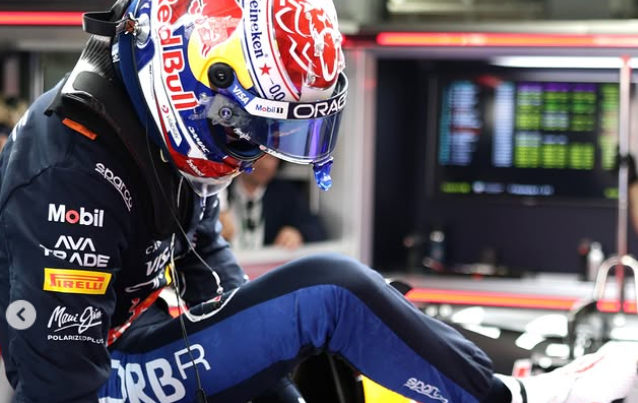
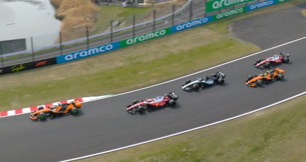
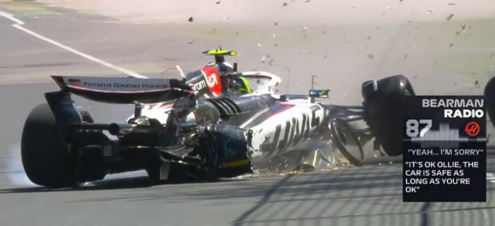
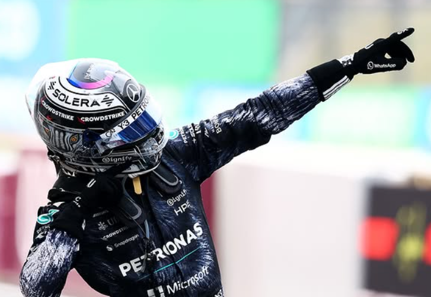

Suzuka qualifying told you pretty much everything you needed to know about where the pecking order stands three races into 2026. Antonelli on pole, Russell right behind him, Piastri third. Mercedes and McLaren, same as it's been. Ferrari were next best with Leclerc in P4 and Hamilton in P6, and both of them spent the whole weekend saying the same thing — they're losing too much time on the straights. Hamilton put it plainly after qualifying: "It's just we're not very quick." Not much to add to that really. Leclerc had a lairy moment on his final Q3 lap that cost him whatever gap he had to Piastri, but honestly the pace just wasn't there regardless. The bigger story though was at Red Bull. Rookie Lindblad from Racing Bulls knocked Verstappen out in Q2 in the dying seconds. Hadjar, his own teammate, also made it through ahead of him. Max said after the session he was "beyond frustrated" and didn't even know the right word in English for what he was feeling. Three races in and Red Bull look like a completely different team to what they were twelve months ago.

Antonelli wheelspin off the line from pole. Just like that, the race script changed completely. Piastri had the cleanest launch from third and was already through into the lead going into Turn 1, Leclerc slotting in behind him. Russell also lost places at the start, dropping behind Norris. Hamilton held fifth. So the top six after lap one looked nothing like the grid. What happened next was even more interesting. Antonelli, now sixth, started cutting through and got past Hamilton by lap two. Russell meanwhile had put his head down and dispatched Norris and then Leclerc within the next two laps, putting himself right on Piastri's tail. By lap four, you had Piastri and Russell fighting for the lead, Leclerc dropping to third and Hamilton stuck behind him in a queue, watching the Mercedes battle unfold ahead and unable to do anything about it. Ferrari had pace in flashes but not when it mattered. Lewis spent large parts of that first stint just following Leclerc around, the two of them effectively racing each other rather than the cars at the front. Not the afternoon the red cars were hoping for.

On lap 22, Bearman had a massive shunt. 50G impact. He walked away with a knee contusion, which was the luckiest outcome possible given what the onboards showed. But before we talk about what the Safety Car did to the race, we need to talk about why the crash happened, because this one matters. Colapinto was on a slow outlap when Bearman came through on the full 2026 boost, over 50 km/h faster. Franco had absolutely no warning. He said after the race: "I was a little sitting duck. The speed difference is so big. He was more than 50 km/h quicker than me, and even spinning he overtook me." The stewards looked at it and cleared Colapinto immediately. He never moved on the racing line. He did nothing wrong. The speed differential that the 2026 boost system creates is just genuinely dangerous, and the drivers had been raising this concern since pre-season testing. At Suzuka there was at least runoff. At Baku or Las Vegas, that same scenario ends very differently. Bearman was fine this time. Everyone in the paddock knew it could easily not have been.
The Safety Car from Bearman's crash reshuffled the midfield all over again. Hadjar was the unlucky one — he had pitted just two laps before it came out, which dropped him from a decent position all the way back to P13 on cold tyres with everyone around him on fresh rubber. He spent the rest of the race trying to undo the damage. Got past Hulkenberg on lap 30, then pulled off a nice move around the outside of Bortoleto into Turn 1 on lap 36. But Ocon ahead in the Haas had already pulled a gap and was not coming back. Then Hulkenberg reeled Hadjar back in and reclaimed his position in the closing laps. All that work for P12, which tells you how brutal the midfield has been this season. Gasly on the other hand had a quietly brilliant afternoon in the Alpine, finishing P7 and beating a Red Bull around Suzuka in a straight fight. A year ago that would have been front page news. Now it says more about Red Bull than it does about Alpine. Ocon in P10 scored points but was absolutely seething about the Safety Car timing on the team radio. And Colapinto, after everything that happened with the Bearman incident, finished P16, a full 33 seconds behind his own teammate Gasly. A second a lap slower after the restart. He had shown something in China but Suzuka was a rough one for him and people noticed.

The Safety Car was the moment that decided everything at the front too. Antonelli pitted under it, came out on fresh tyres while Piastri and Russell were already on older rubber, and just drove away in the second stint. 13.7 seconds to Piastri at the flag. Clean, controlled, no drama. Piastri somehow still got Driver of the Day from the fans despite finishing second, which says a lot about how hard he worked all race to hold what he had. Leclerc came home P3, which at least gave Ferrari a podium to point to. Hamilton was P6, tidy enough but never in a position to threaten anyone ahead. He and Leclerc left Suzuka knowing they need more pace before the European swing if they want to be part of this championship conversation. Russell was P4 and genuinely quick all race, just undone by a start that cost him the clean air he needed. Back to back wins now for Antonelli, and at 19 years old he leads the Drivers' Championship, the youngest in F1 history to do so. Mercedes look like they have figured out these regulations better than anyone. The rest of the grid is still working out how to catch up.